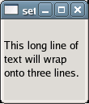

Toggles line wrapping within the GtkLabel widget. true makes it break lines if text exceeds the widget's size. false lets the text get cut off by the edge of the widget if it exceeds the widget size.
Example 86. Allowing GtkLabel Text to Wrap Lines
<?php
// Create a window to hold the label.
$window = new GtkWindow();
// Set up the window to close cleanly.
$window->connect_simple('destroy', array('Gtk', 'main_quit'));
// Create a label with a long line of text.
$label = new GtkLabel('This long line of text will wrap onto three lines.');
// Set the label's size.
$label->set_size_request(100, 100);
// Allow the label to wrap.
$label->set_line_wrap(true);
// Add the label to the window.
$window->add($label);
// Show the window and start the main loop.
$window->show_all();
Gtk::main();
?> |

See also: get_line_wrap()